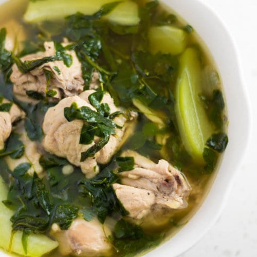

Home
Tinolang Manok

Tinolang Manok is a great tasting dish especially in rainy days.
It is easy to cook and also nutricious. It is famous among Filipino because its recipes are easy to find and also cheap.
There are also a lot of benefits in eating Tinolang Manok. It is a good source of protein. It also contains Vitamin B3. It is also a good appetizer
Ingredients
- 2 lbs. chicken cut into serving pieces
- 1 cup malunggay leaves
- 1 cup hot pepper leaves
- 1/8 teaspoon ground black pepper
- 1 piece unripe papaya wedged
- 6 cups water
- 1 piece Knorr chicken cube
- 1 piece onion sliced
- 4 cloves garlic crushed and chopped
- 3 thumbs ginger julienne
- 2 tablespoons fish sauce patis
- 3 tablespoons vegetable oil
Steps
- Heat oil in a pot.
- Sauté garlic, onion, and ginger. Add the ground black pepper.
- When the onion starts to get soft, add the chicken. Cook for 5 minutes or until it turns light brown.
- Pour the water. Let boil. Cover and then set the heat to low. Boil for 40 minutes.
- Scoop and discard the scums and oil on the soup.
- Add the Knorr chicken cube and chayote or papaya. Stir. Cover and cook for 5 minutes.
- Put the malunggay and hot pepper leaves in the pot and pour the fish sauce in. Continue to cook for 2 minutes.
- Transfer to a serving bowl. Serve.